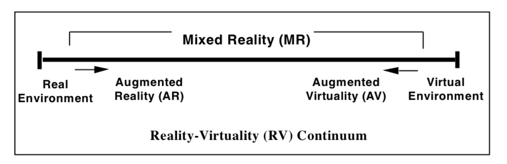

The history of AR and VR dates back at least to the 1960s (and in some sense much earlier), and AR and VR are themselves only the latest in a lineage of reality media. These two technologies spent decades in the labs of computer scientists or were used exclusively for specialized and expensive applications, e.g. by the military. It was in the 2010s that they became widely available consumer technologies. Smart phones brought a kind of AR to millions of user, and inexpensive headsets such as the Oculus Rift and later Quest introduced gamers and others to VR.
As we argue in Reality Media, AR and VR have entered into our media culture through a process of remediation. As new media, they were linked to the tradition of earlier media—particularly film in the case of VR and photography and television in the case of AR. And in the spirit of remediation they not only borrow from earlier media but claim to improve on them, by offering new ways to bring us closer to reality, or perhaps hyperreality.
The Milgram Spectrum
As early as 1995, Paul Milgram and Fumio Kishino proposed what they called the "virtuality continuum" to illustrate the relationship of VR and AR to "unmediated" reality.

The spectrum illustrates the principal difference between AR and VR: while VR displays create at complete visual world, AR combines computer-generated objects with our view of the world. VR and AR pursue different strategies to represent reality. VR promises presence, while at least some AR experiences promise to enhance the aura of special places, such cultural heritage sites.
Enter the "What are AR and VR?" Gallery .